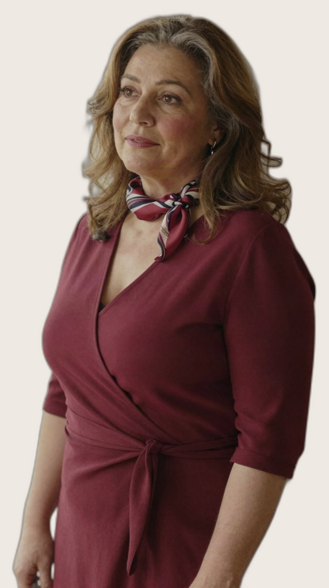

Online-Beziehungscoaching · ohne Wartezeit auf einen Therapieplatz
Ihr organisiert euren Alltag perfekt. Und redet über nichts anderes mehr.
Wir helfen dir, aus dem Mitbewohner-Modus wieder ein Paar zu machen. Online, in deinem Tempo und auch dann, wenn dein Partner noch nicht mitziehen will.
Wenige Minuten. Kostenlos. Dein Partner muss nicht mitmachen.

Kommt dir das bekannt vor?
Es ist nichts Dramatisches passiert. Genau das macht es so schwer.
Kein Streit, der alles erklärt. Keine Krise, die du jemandem erzählen könntest. Nur das Gefühl, dass ihr euch langsam verliert, zwischen Kita, Schichtplan und Wäscheberg.
Ihr redet nur noch über Organisatorisches
Einkauf, Termine, wer die Kinder abholt. Alles läuft. Nur über euch redet ihr nicht mehr.
Gespräche kippen, sobald es unangenehm wird
Nach zehn Minuten geht es um Vorwürfe, oder einer steht auf. Am Sonntagabend besonders zuverlässig.
Du kennst euer Muster und kommst trotzdem nicht raus
Du hast Bücher gelesen und Podcasts gehört. Im echten Gespräch passiert dann wieder genau dasselbe.
Dein Partner will keine Beratung
Du willst trotzdem anfangen. Ohne dass jemand in deinem Umfeld davon erfährt.
Du kannst allein anfangen
Stell dir vor, der Sonntagabend fühlt sich wieder leicht an.
Ihr sitzt am Küchentisch und redet nicht über den Kita-Plan. Du sagst, was dich beschäftigt, und dein Partner bleibt sitzen. Das Gespräch kippt nicht. Ihr seid wieder ein Team und nicht zwei Abteilungen, die sich per Nachricht abstimmen.
Es fühlt sich nicht mehr wie ein Kraftakt an, sondern wie euer Alltag. Dahin kommst du nicht über eine Diagnose, sondern darüber, dass du euer eigenes Muster endlich verstehst. Und das kannst du allein anfangen.
Die Themen, die du monatelang aufgeschoben hast, bringst du auf den Tisch. Und es bleibt ruhig.
Mitten im Gespräch merkst du, was gerade passiert, und kannst aussteigen statt mitzufahren.
Oft zieht der Partner nach, wenn sich auf einer Seite etwas verändert. Ohne dass du ihn überreden musst.
Alles online, in deinem Tempo. Kein Wartezimmer, kein Gespräch mit der Familie darüber.
Wie sich das bei dir anfühlt
Nach dem Quiz
Du hast endlich einen Namen für das, was bei euch schiefläuft. Es liegt nicht an dir und nicht an ihm, sondern an einem Muster, das ihr beide kennt.
Nach 4 Wochen
Das erste Gespräch, das nicht kippt. Ihr redet zwanzig Minuten über etwas Unangenehmes und keiner steht auf.
Nach 3 Monaten
Ihr seid wieder ein Team. Nicht streitfrei, aber auf derselben Seite. Und wenn es doch knallt, findet ihr allein wieder zueinander.
Kostenloses Quiz, wenige Minuten. Der erste Schritt dahin.
Stimmen
Andere haben genau da angefangen, wo du gerade stehst.
Der Kurs „Partnerschaft verstehen“ hat unsere Beziehung gerettet.
Ich habe allein angefangen, weil mein Mann nicht wollte. Nach sechs Wochen hat er sich dann doch dazugesetzt.
Ich bin Single und dachte erst, das Ganze ist nichts für mich. War es aber.
Beispiel-Stimmen aus dem fiktiven Übungscase, keine echten Kundenbewertungen.
Das Quiz
Was du nach dem Quiz über deine Beziehung weißt.
Wenige Minuten, ein paar ehrliche Fragen. Danach hast du schwarz auf weiß, was bei euch gerade wirklich passiert.
Welches Muster bei euch läuft
Ob ihr Unangenehmes runterschluckt, aneinander vorbeiredet oder im Alltag versinkt. Du erkennst euch in der Beschreibung wieder.
Warum euer Gespräch hängt
Nicht das Thema ist das Problem, sondern wie ihr miteinander umgeht. Du siehst, wo es bei euch klemmt.
Was du als Erstes ändern kannst
Ein konkreter Schritt für die nächste Woche. Nichts, wofür dein Partner mitmachen muss.
Dass du damit nicht allein bist
Diese Muster kennen viele Paare. Du bekommst eine Einordnung, statt weiter zu rätseln.
Vier Fragen, etwa eine Minute. Du kannst jederzeit abbrechen.
Über mich
Hallo, ich bin Maria.
Maria Bordfeld, Gründerin und Beziehungscoach
Ich habe Sozialpädagogik studiert und danach sieben Jahre in einer kirchlichen Familien- und Eheberatungsstelle gearbeitet, Schwerpunkt Paargespräche. Dazu kommt eine dreijährige systemische Beratungsausbildung.
Seit 2021 begleite ich Paare online, seit 2023 ausschließlich. In den Gesprächen habe ich gelernt: Die wenigsten brauchen eine Diagnose. Sie brauchen jemanden, der mit ihnen anschaut, was zwischen ihnen im Alltag wirklich passiert.
Deshalb arbeite ich nicht mit Schuldfragen und nicht mit Etiketten, sondern mit deinen konkreten Situationen. Und deshalb kannst du bei mir auch allein anfangen.
Kein Wartezimmer, keine Diagnose, kein Schuldgespräch. Nur der Blick auf das, was zwischen euch passiert.
Fang heute an zu verstehen, woran es bei euch hängt. Auch wenn du allein anfängst.
Das Beziehungs-Quiz dauert nur wenige Minuten. Du bekommst deine persönliche Auswertung und einen ersten Schritt, den du direkt ausprobieren kannst.
Kein Abo, keine Zahlungsdaten, keine Verpflichtung.
Das Quiz und die Auswertung sind kostenlos. Du musst danach nichts kaufen.
Diskret: kein Praxisbesuch, keine Unterlagen im Briefkasten, niemand in deinem Umfeld erfährt davon.